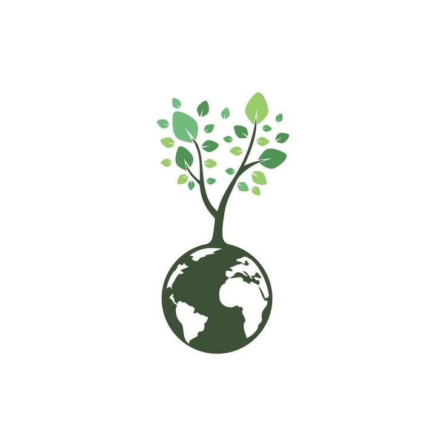

COLETEJÁ

Com objetivo de tornar nossa cidade mais limpa, conciente e
sustentável, criamos o:
COLETAJÁ uma plataforma que te ajuda a
localizar pontos de coleta de diversos tipos de resíduos.
Localize no mapa o ponto de coleta ideal para você e contribua com um mundo mais consciente:
| SÍMBOLOS | DESCARTES | SÍMBOLOS | DESCARTES |
|---|---|---|---|
 |
Bateria |  |
Óleo |
 |
Remédio |  |
Lixo eletrônico |
| Lixo orgânico |
essa iniciativa é parte de um esforço coletivo de nossa alunos CESF para promover a reciclagem, reduzir o impacto ambiental e construir uma cidade mais verde e consciente. você também pode colaborar compartilhando novos pontos de coleta ou sugerindo melhorias